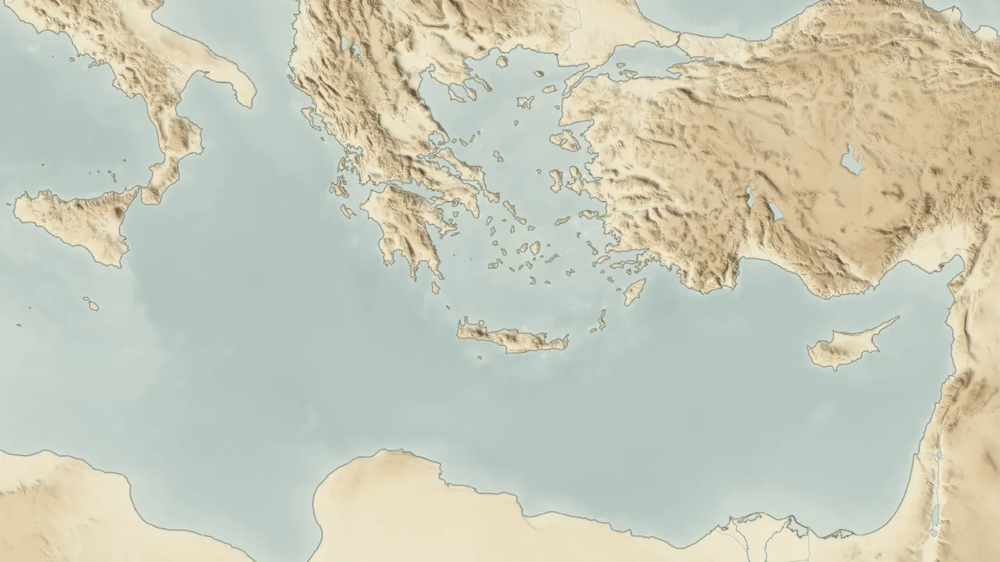

Para estudiar la Biblia
Cada relato de la Biblia, en su lugar y en su tiempo
Un mapa y una línea de tiempo movidos por una sola fecha. Busca a alguien, un lugar, un capítulo o un año, y verás quién vivía, dónde estaba y qué pasaba alrededor. Cada dato enlaza a su fuente.
Prueba:

Relieve: Natural Earth, USGS, NOAA, Copernicus, Mapzen · Créditos
O empieza por una pregunta
Elige una época
Cada una abre el mapa en su tiempo y en sus lugares.
Sigue un recorrido
Paradas en orden, cada una con su pasaje. Si lo dejas a medias, sigue donde ibas.